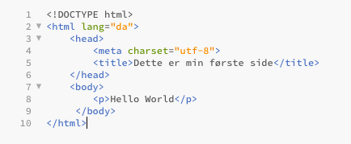

Opbygning af HTML-kode HTML-kode er opbygget af tags, som er tekstblokke markeret med en start (mindre-end-tegnet <) og en slutning (større-end-tegnet >). Imellem disse to tegn er som minimum et tag-name, som definerer hvad meningen med dette tag er. Der kan også efter tag-name’et være en eller flere attributter, som angiver en egenskab ved dette tag. Denne illustration viser et eksempel på opbygningen af et tag.

Empathise
Tekst 1 Tekst 1 Tekst 1 Tekst 1 Tekst 1 Tekst 1 Tekst 1 Tekst 1 Tekst 1 Tekst 1 Tekst 1 Tekst 1 Tekst 1 Tekst 1

De 6 faser i Design Thinking.
Tekst 2
Tekst 2 Tekst 2 Tekst 2 Tekst 2 Tekst 2 Tekst 2 Tekst 2 Tekst 2 Tekst 2 Tekst 2 Tekst 2 Tekst 2 Tekst 2 Tekst 2 Tekst 2 Tekst 2 Tekst 2 Tekst 2 Tekst 2 Tekst 2 Tekst 2
Jeg var i gruppe med Terkel, Marie, Nicklas, Niklas og Veli. Vores løsning af opgaven kan ses i denne PDF:
Tekst 3
Tekst 3 Tekst 3 Tekst 3 Tekst 3 Tekst 3 Tekst 3 Tekst 3 Tekst 3 Tekst 3 Tekst 3 Tekst 3 Tekst 3 Tekst 3 Tekst 3 Tekst 3 Tekst 3 Tekst 3 Tekst 3 Tekst 3 Tekst 3 Tekst 3 Tekst 3 Tekst 3 Tekst 3 Tekst 3 Tekst 3 Tekst 3 Tekst 3 Tekst 3 Tekst 3
Videoer om projektet
Vores arbejde i gruppen blev dokumenteret i disse 5 videoer: